Report Types
This section gives information about available Powermanager reports.
Absolute Energy
This report gives an overview of the absolute energy consumption of the data points for the selected time intervals. It shows the data point which has the most influence on the total energy consumption. The report can be created with a bar chart or an area chart.
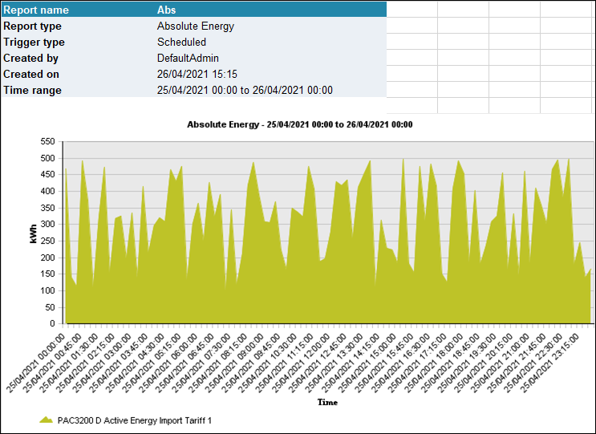
Cost Center Report
This report calculates the total energy consumption and costs for different mediums associated with each cost center. The report can be used for internal cost allocation.
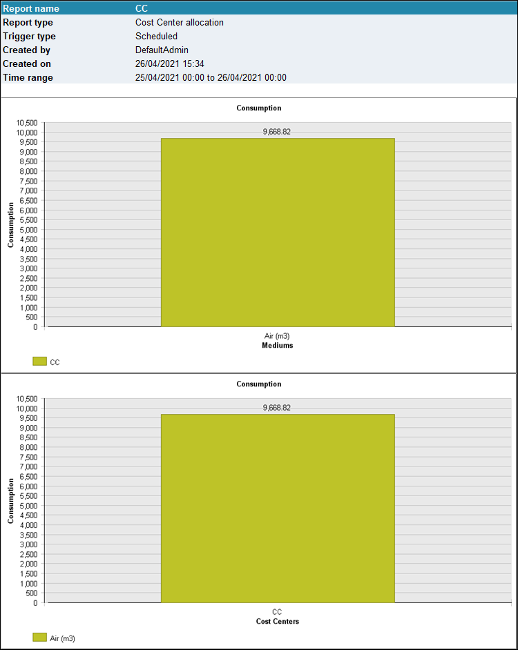
Delimitation Report
This report allows you to delimitate third-party current quantities with PAC2200CLP devices in adherence to German “EEG-Umlage”. The EEG surcharge serves to finance the expansion of renewable energies and is specified in the Renewable Energy Sources Act (EEG).
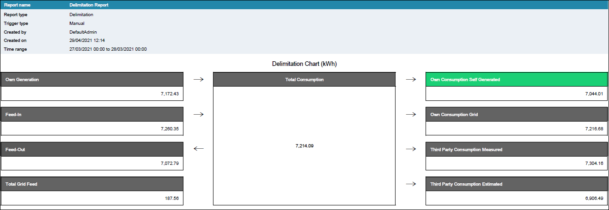
Energy Analysis Report
This report analyzes the energy consumption and the corresponding power demand value for a time period of one or two years. It gives an overview of the power demand curves for the year and each month. Only the completed month have charts and its data for the current year. Also, the report shows the energy consumption value of each month and the corresponding power demand peak value.
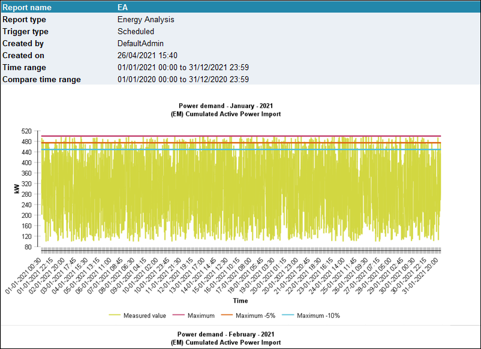
Load Duration Report
This report displays the power demand values and the duration of each power demand value used in the selected time period. It displays a detailed view of the 50 highest power demand values of the selected time interval and an analysis of these values over the day.
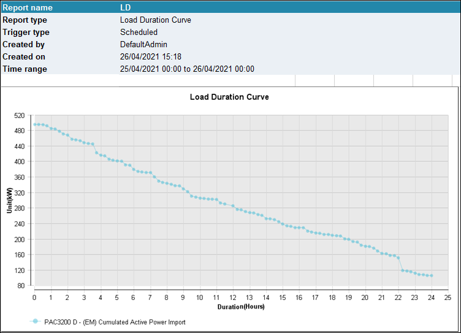
Load Variance Report
This report shows the power demand values for the selected time period and shows the range of the power demand values for each time. On this basis, it displays the variance of the load for a certain time period.
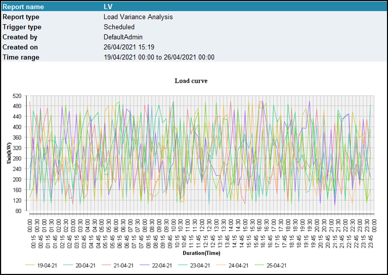
Power Peak Analysis Report
Powermanager contains a report generator for determining power peaks within a specified time range. You can evaluate the following values using the report generator:
- Power demand values of the PAC device types. The time stamp of the power demand values is at the start of the period.
- Parameterized power demand values of generic Modbus devices.

Sankey Report
This report gives an overview of the energy consumption in the form of a Sankey diagram.
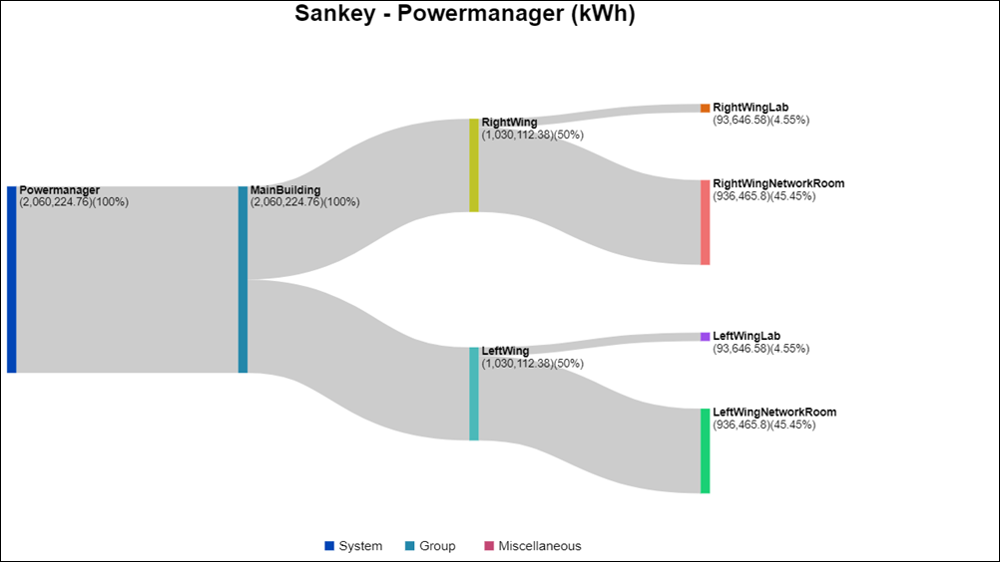
Standard Report
This report can be used for any powermanager measuring value that is archived. This report displays all the values of the selected data points for a selected time period in a table.
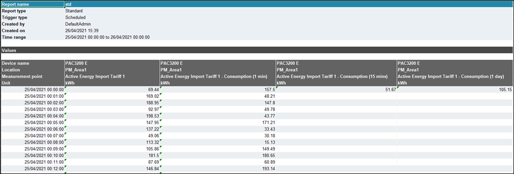
Top 10 Energy Report
The Top 10 energy report displays the details of the top 10 consumers of the active energy and reactive energy across the powermanager system.
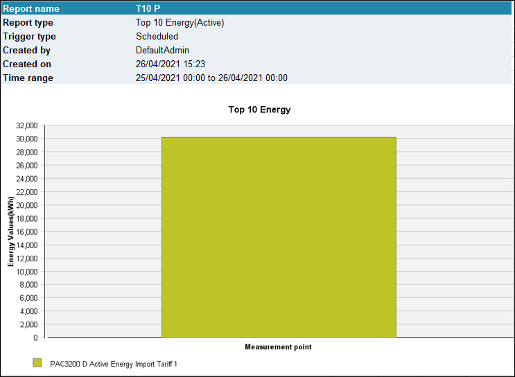
Total Energy Report
This report displays the total energy consumption of a selected data point for the selected time period. The data can be displayed as a bar chart or a pie chart.
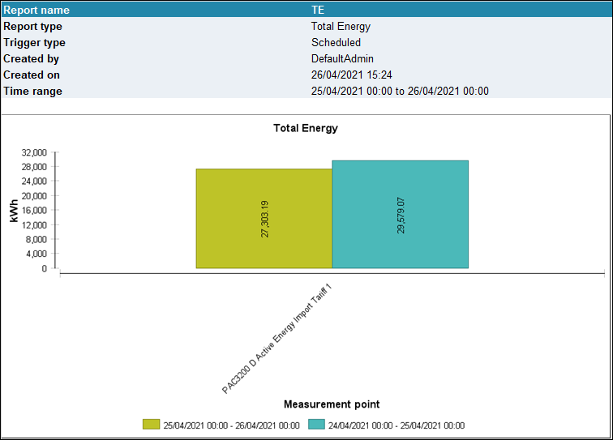
EN 50160 Report
This report displays the total power quality variations occurred over selected time period. The data can be displayed as same as flex client which is combination of timeline chart, donut chart, tables, ITI CBEMA, and SEMI F47 standard.
NOTE: PowerQuality license is required to view EN 50160 report.
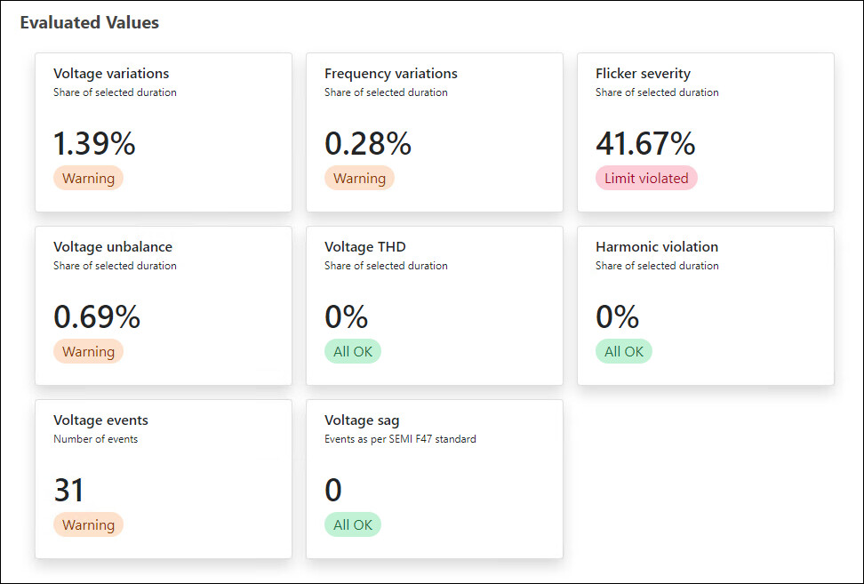